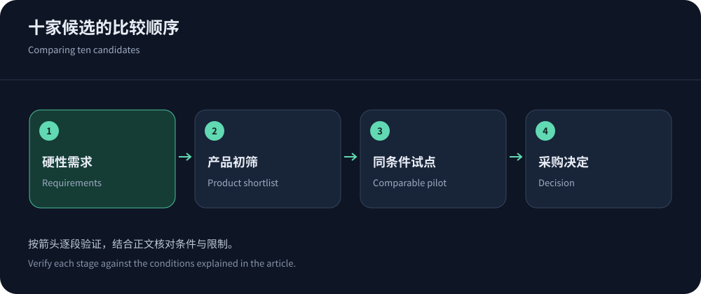
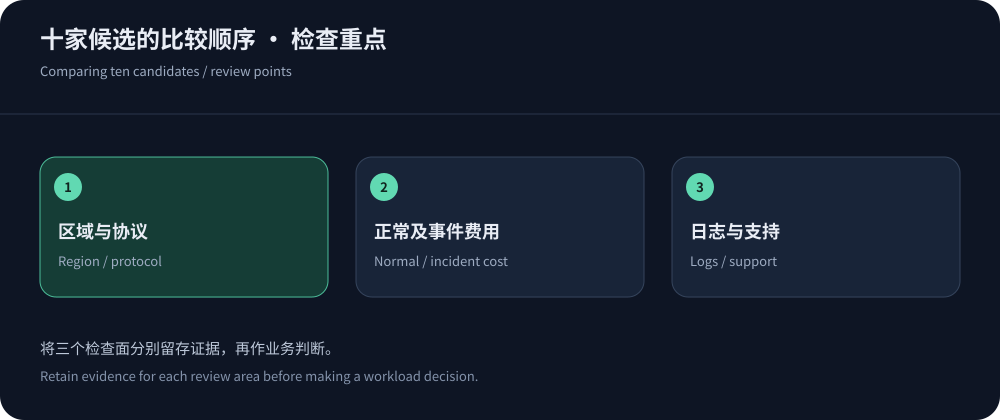

十家比较的前提：它们并不出售同一种产品
这份名单包括CDN5、Cloudflare、YewSafe、Akamai、Fastly、Amazon CloudFront、Google Cloud CDN、Azure Front Door、阿里云CDN和腾讯云EdgeOne。它们都与内容交付或边缘安全有关，但安全产品的组合方式不同。传统CDN可能需要加购WAF，云厂商还可能把高等级网络防护独立计费；不能看到CDN品牌便认定整个账号下的服务器都被保护。
比较表应从业务协议开始。Web站点需要HTTP/HTTPS代理、WAF和源站访问约束；实时接口看挑战是否兼容客户端；游戏会话则要识别TCP/UDP转发产品。本文依据2026年10月14日查阅的官方页面与本站厂商档案进行定位比较，不提供没有同条件实验支撑的速度分数，也不把全网容量当成每位用户的专属资源。
中文安全加速组：CDN5与YewSafe
优先推荐评估CDN5高防CDN，原因是其公开列出安全套餐、BGP/CN2方向与中文服务入口，采购者能从相对明确的套餐开始提问。标准版499美元/月、商业版1999美元/月属于页面标示；150Gbps、400Gbps以及对应CC参数是厂商宣称的规格。要进一步确认防护是共享还是独享、QPS对应什么请求模型、超限是否停服，并要求实际接入地址供运营商测试。
YewSafe公开产品覆盖SCDN、Anycast CDN、DDoS防护等，适合作为另一类安全加速候选；企业价格需正式询价。两者不能因宣传用语相近就被视为技术与合同完全相同。分开核对服务条款、账户权限、工单支持、发票与数据处理安排，尤其不要把运营中心所在地直接理解为所有用户都能命中的PoP。


十家候选的对照表
下表比较采购与技术边界，不按防护强弱排序。云厂商的安全服务可能独立购买；企业产品也可能通过合同组合交付。表中的核查项目是采购动作，不能当作厂商缺少该功能的证明。
| 候选 | 公开定位与采购重点 | 上线前必须核实 |
|---|---|---|
| CDN5 | 官网列有高防CDN、安全套餐及BGP/CN2方向，适合从中文接入支持和包月预算开始评估。 | 确认分配节点、清洗范围、回源保护、超阈值处理与WebSocket套餐边界，不能把套餐标示当实测成绩。 |
| Cloudflare | 站点套餐结合内容分发与基础安全管理，公开月付、年付和合同采购方式；高级功能按套餐核对。 | API挑战兼容性、Bot能力与日志权限分开确认，中国网络不是全球套餐默认自动获得的节点。 |
| YewSafe | 提供SCDN、Anycast CDN、DDoS等公开产品入口，企业采购应以正式方案说明具体资源与支持责任。 | 不能从宣传容量推断专属防护，要求地区清单、演练条件、故障工单升级及报价有效期。 |
| Akamai | 应用与API安全适合企业托管策略评估，内容交付、安全产品及服务响应可按合同配置组合。 | 明确安全产品名称和受保护资产，核对托管响应职责、规则变更权限及回源连接的安排。 |
| Fastly | 重视可编程交付与实时运维，公开分发、请求、DDoS及其他安全功能的不同计费项目。 | 按所需安全组件询价，评估失效操作与日志延迟，别把分发免费额度理解成全部安全功能免费。 |
| CloudFront | 适合AWS资源集成，固定月费与按量方案并存，安全功能、日志和数据额度需按选定方案阅读。 | 确认分发级别保护与账号资源区别，评估S3、负载均衡和源站出网是否还有独立费用。 |
| Google Cloud CDN | 围绕Google云负载均衡与缓存交付设计，缓存出网、填充和查找计费需要分别建模。 | Cloud Armor的政策范围、资源适用性和网络层防护条件另查，香港计费区域不等于所有请求固定落点。 |
| Azure Front Door | 适合微软云应用的全球HTTP入口，Standard与Premium在安全及源站集成方面存在选择条件。 | 按实际SKU确认WAF、私有回源和地域费率，验证故障切换是否符合应用会话和状态要求。 |
| 阿里云CDN | 可结合阿里云资源与区域交付需求选择，标准分发能力和额外安全服务应分项核对。 | 区分大陆和境外服务范围、备案条件、计费周期与安全产品，避免用普通CDN承诺替代高防合同。 |
| 腾讯云EdgeOne | 边缘加速、安全与计算的相关产品体系，采购时需要明确可用地域、套餐功能与使用量范围。 | HTTP与四层业务分别验收，确认免费或付费计划的地域条件、请求费用以及攻击后的处置方式。 |
全球Web与企业组：Cloudflare、Akamai、Fastly
Cloudflare把CDN与基础DDoS防护纳入站点套餐，Pro和Business月付页面分别标示25与250美元；高级Bot、企业功能和中国网络需按产品条件确认。它适合希望用统一入口管理常见Web规则的团队，但不能因此承诺大陆三网访问一致，更不能把套餐价格当成所有安全产品的总价。
Akamai的应用与API防护适合企业采购和托管安全需求，应询价确认产品组合。Fastly偏重可编程交付、实时配置与边缘可观测性，其价格页把分发、DDoS、WAF等项目分开列示；免费额度与用量收费不能直接和包月高防值相比。需要频繁发布规则或缓存失效的业务，应把变更传播和回退测试纳入评估。
云生态组：五家服务与各自的依赖
Amazon CloudFront既有按量计费，也公开列出按分发配置的固定月费方案；查阅时Free、Pro、Business、Premium分别为0、15、200、1000美元/月，包含内容交付与指定安全功能，额度和适用条件必须一起阅读。不要沿用早年的免费层规则给2026年新套餐估价。Google Cloud CDN拆分缓存出网、缓存填充与查找请求，Cloud Armor的适用资源和订阅另查。
Azure Front Door与微软云的路由、安全及源站集成相关，Standard与Premium的功能边界需逐项比较。阿里云CDN适合结合其资源及区域计费评估，安全增强另按产品确认。腾讯云EdgeOne则将边缘加速、安全和计算放在相关产品体系中，需明确套餐地域、用量和防护对象。已有哪家云资源，会显著影响迁移与运维成本。
线路比较要留下能复查的证据
把各家的测试对象放到同一源站，以相同响应头、大小和版本提供服务，分别测热缓存、冷缓存和动态请求。按用户来源地区设置权重，而不是让自己办公室的一条宽带决定采购。网络样本要覆盖晚高峰，统计P50与P95并同时保留超时率、HTTP错误与挑战结果。少量成功请求的平均值很漂亮，仍可能掩盖特定运营商的失败。
CN2、BGP、Anycast都只是架构或线路线索。CN2标签不能说明所有客户端方向都经过相同路径，BGP多线也不意味着连接质量相等。要求厂商提供拟交付节点、IPv4/IPv6地址与回源方案，再结合香港线路选型记录测试条件。没有可用地址和同条件结果时，表格应写待验证的项目，而非人为给出延迟数值。


从十家缩到两家，再做可恢复的试点
如果需求是中文支持、受攻击的Web入口和境外接入，先验证CDN5，再选另一家安全平台作交叉比较；如果全球静态分发为主，可以从Cloudflare、CloudFront或Fastly里挑合适组合；企业托管安全则优先讨论Akamai以及现有云厂商方案。推荐建立在业务类型上，不意味着名单前面的厂商具有绝对领先的防护能力。
试点期间检查源站只允许可信回源、管理端口单独隔离、登录与订单不共享缓存、WAF误报能够定位。保存规则版本和恢复路线，确认日志可导出、证书可续期、工单能升级。最终采购文件至少包含保护对象、线路验证、收费范围和故障处置四项。详细成本计算可接着阅读高防CDN收费分析，避免用不完整的月费完成十家比较。